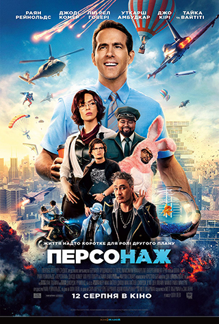

Американська спортивна драма, фільм Джона Лі Генкока.Фільм розповідає про Майкла Оере, гравця Балтимор Райвенс, Фільм заснований на реальних подіях. Майкл Оер, молодий афроамериканець, в черговий раз позбавляється житла, і його бере під свою опіку забезпечена сім'я, членом якої він згодом стає. Майкл володіє величезним ростом і титанічною силою і починає грати за шкільну команду в американський футбол. Успіхи у спорті та навчанні дозволяють йому отримати стипендію спортсмена і вступити на бюджетне відділення в Університет Міссісіпі. В кінці фільму наведені документальні зйомки того, як Майкл проходить відбір у професійну команду «Балтимор Райвенс». Неперевершена гра Сандри Буллок, за який акторка отримала Оскар, та зворушлива історія не залишить байдушим.
Персонаж
Головний герой, на ім'я Хлопець (Гай у виконанні Раяна Рейнольдса) працює у великому банку, який без кінця грабують бандити. В інших точках міста справи йдуть приблизно так само, а то й гірше. На вулицях відбуваються перестрілки й потужні вибухи, повз пробігають озброєні люди, які викрадають автомобілі, збиваючи пішоходів, а над їх головами вертольоти втрачають управління і врізаються в хмарочоси. Хлопця це анітрохи не бентежить, він завжди прокидається з посмішкою і виконує одноманітні дії, не звертаючи уваги на те, що кожен день стає копією попереднього. Річ у тім, що Хлопець — це неігровий персонаж у відеогрі з відкритим світом, про що він поки не здогадується. Але коли герой закохається в аватара і спробує стати повноцінним гравцем, це вплине не тільки на його всесвіт, але також на розробників з реальності. Основні дії фільму відбуваються в Вільному Місті (Free City) — віртуальному світі, що нагадує суміш GTA Online і Fortnite з реалістичною графікою. Це відмінна основа для екшн-комедії, в якій можливі абсолютно будь-які бойові сцени. Герої, перебуваючи всередині гри, покращують навички й підвищують рівень, а в разі невдачі починають все заново.
